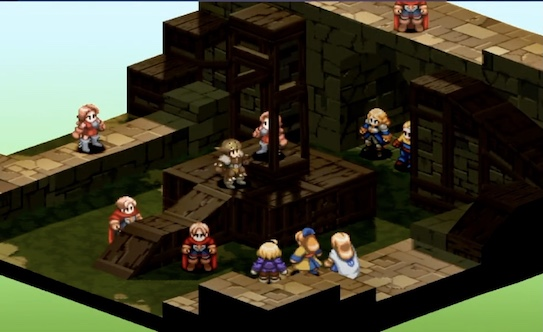
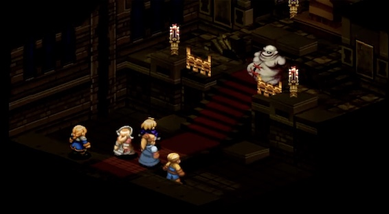
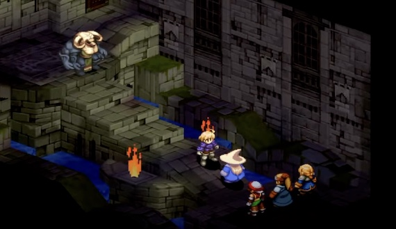

Chapter 1
The story begins with Ramza Beoulve as a young cadet in the respected House Beoulve, caught amid the aftermath
of the Fifty Years' War. The land of Ivalice is in turmoil: poverty and unrest are rampant, and resentment grows
among the lower classes while the nobility strives to retain control. Ramza and his childhood friend Delita Heiral,
whose sister Tietra is considered beneath the nobles, are assigned to fight a rebellious group called the Corpse Brigade.
Throughout this chapter, Ramza uncovers the extent of corruption among the nobles, culminating in tragedy when
Tietra is killed during a botched kidnapping and rescue attempt. This loss shatters Delita's trust in the nobility and
power structure and marks the first transformation in both his and Ramza's views on the world.

Chapter 2
After the events at Orbonne Monastery and Princess Ovelia's abduction, Ramza Beoulve—now separated from
his noble family and using a mercenary's life to stay unnoticed—begins searching to uncover the truth behind
the political turmoil engulfing Ivalice. He joins forces with Agrias Oaks and Gafgarion to rescue Ovelia and
finds himself tangled in a complex web of betrayal and ambition. Ramza discovers that the church, which is
supposed to be a force of stability, is in fact manipulating events behind the scenes for its own gain.
Meanwhile, Delita, Ramza’s childhood friend of common birth, leverages the chaos for his own hidden purposes
by rising through the ranks and enacting plots against the kingdom's noble houses.

Chapter 3
As the War of the Lions escalates, Ramza continues his journey to protect Princess Ovelia and expose the truth
about the church and the mystical Zodiac Stones. His efforts put him directly in conflict with both corrupt nobles
and the church's agents, who seek to use the Stones for dark, demonic purposes. Ramza is increasingly isolated,
viewed as a traitor by the powerful Beoulve family and hunted by those seeking to quell his interference. The church
manipulates the war to further their ends, painting Ramza as an enemy while hosting their own dark schemes. Delita
continues to quietly shape the conflict from the shadows, using Ovelia and the broader war to position himself for
ultimate power.

These pivotal chapters showcase Ramza's transformation from a naïve noble into a determined hero, willing to stand against corrupt authority for justice, while Delita's cunning and ambition propel him toward his own form of justice and personal ambition.
Chapter 4
Chapter 4 centers on Ramza’s quest to rescue his sister Alma, who is kidnapped at the end of the previous chapter.
No longer concerned with politics or church, Ramza is driven by love and loyalty to his family, facing increasingly
powerful adversaries as he chases the cult that seeks to resurrect the demonic Lucavi through the Zodiac Stones. Along
the way, most of the game’s remaining lords die or are unmasked as pawns of greater evils. The chapter culminates with
the final confrontation at Orbonne Monastery, where Ramza defeats the Lucavi and attempts to save Alma from possession.
The survivors go into hiding, while Delita uses the chaos to seize the throne. The ending leaves Ramza’s fate ambiguous,
cementing the game's central themes of sacrifice, truth, and the price of love